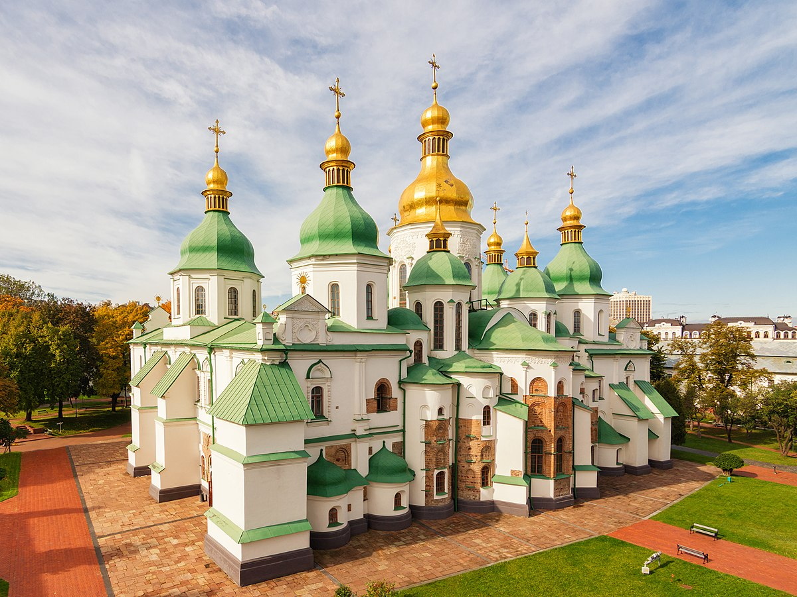
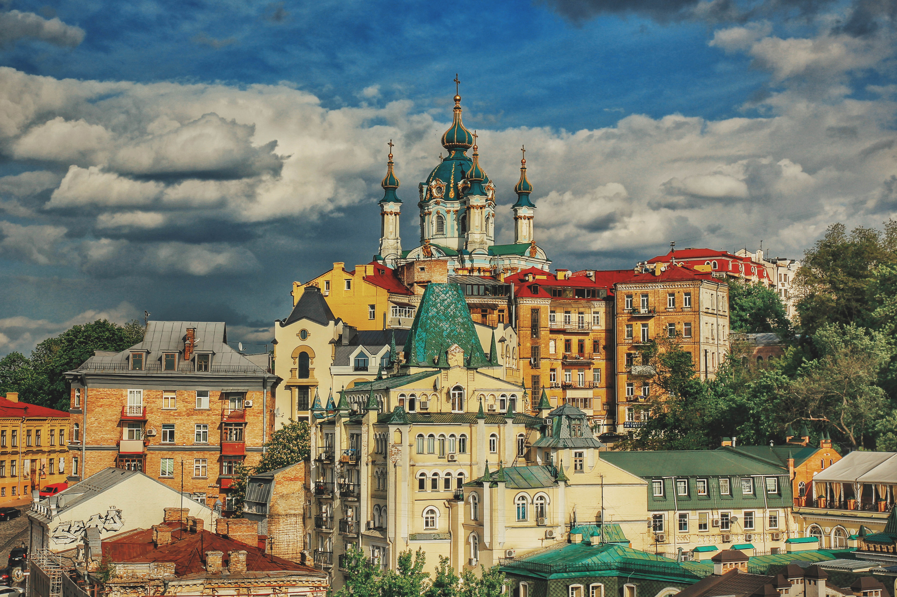
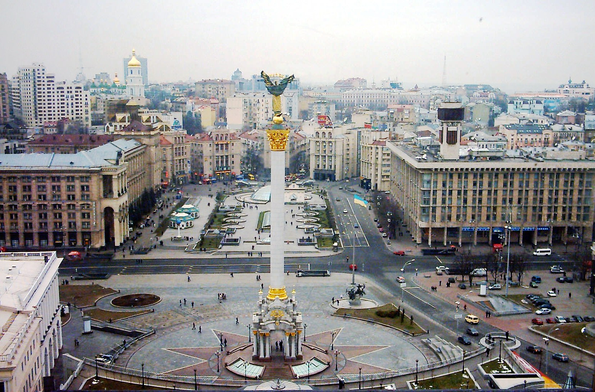
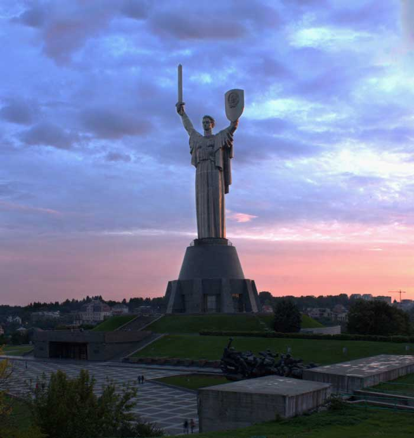
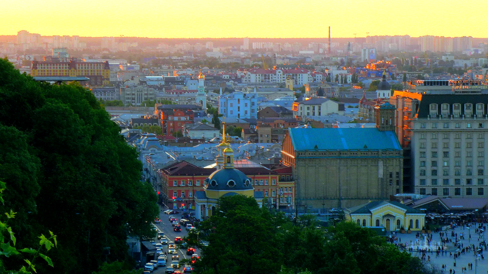

Софійський собор
Локація: Софійська площа
Опис: Одна з найстаріших святинь Києва, збудована в XI столітті за правління Ярослава Мудрого. Входить до списку Світової спадщини ЮНЕСКО.
Києво-Печерська лавра
Локація: вул. Лаврська, 15
Опис: Відомий монастир, заснований у 1051 році. Включає в себе печери з мощами святих, дзвіниці та Успенський собор.

Андріївський узвіз
Локація: Центр Києва, Поділ
Опис: Атмосферна вулиця, яку називають «київським Монмартром». Тут багато мистецьких галерей, сувенірних лавок та Андріївська церква.
Золоті ворота
Локація: вул. Володимирська, 40А
Опис: Відновлені стародавні оборонні ворота Києва, які були головним входом до міста в XI столітті.

Майдан Незалежності
Локація: Центр Києва
Опис: Головна площа України, де відбувалися ключові історичні події. Тут розташований монумент Незалежності та багато фонтанів.
Батьківщина-Мати
Локація: вул. Лаврська, 27
Опис: Величезний монумент (102 м) на честь захисників Вітчизни. Частина музею історії України у Другій світовій війні.
Контрактова площа і Поділ
Локація: Район Поділ
Опис: Історичний район Києва з багатьма старовинними будівлями, церквами та атмосферними кафе.
